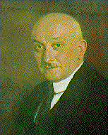

Zoltán Gombocz
Zoltán Gombocz (18 June 1877 – 2 May 1935) was a Hungarian scholar specializing in Finno-Ugric languages, but also in Turkic languages.
Life and career
Gombocz was born in Ödenburg/Sopron, and spent his early years there, where his father was a professor at an evangelical college. He studied philology, which also included Romance languages, under the linguists Josef Szinnyei, August Ph. Becker and also Zsigmund Simonyi at Budapest University, and through them absorbed the principles of the Junggrammatiker. Szinnyei's diplomacy is said to have been decisive in influencing Gombocz's decision to concentrate on languages related to Hungary's historic roots. he obtained his doctorate in 1900. He studied abroad, under the Jesuit linguist Jean-Pierre Rousselot at the Collège de France in Paris,in Germany over 1903/4 in Leipzig where he came under the influence of Hermann Paul and Wilhelm Wundt, and in Finland where he mastered Finnish.
He took up appointments successively thereafter as Professor of Finno-Ugric languages at Kolozsvár and Szeged, and was appointed chair of the subject in Budapest in 1921, where he rose to become rector in 1927 of the most prestigious institution of learning in his country, Eötvös Loránd University. Aside from writing a key modern text on Hungarian, An Outline of a Historical Hungarian Grammnar, Gombocz tackled one of the most recondite problems of his discipline the reconstruction of the ancient vowel and vowel-ablaut system of proto-Finno-Ugrian, which, together with the work of his Finnish colleague Eemil Nestor Setälä, put Finno-Ugrian phonology on a firm scientific basis. Together with his friend and colleague Melich János,Gombocz compiled a comprehensive etymological dictionary of Hungarian, the first scientific work of its kind for one of the Finno-Ugrian languages. Gombocz also mastered Turkology and made fundamental contributions to the topic, writing important papers on the analysis of Turkic loan-words into Hungarian.
other
Pál Kitaibel
Scientists
"PálKitaibel